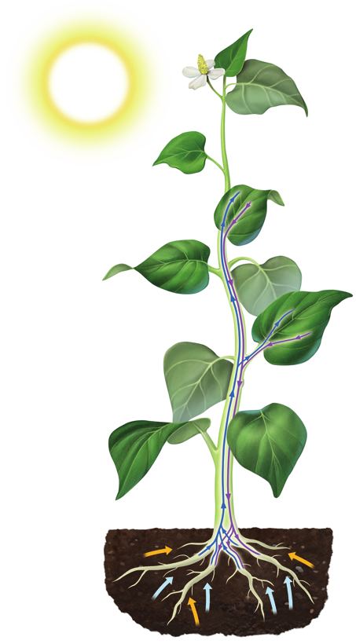
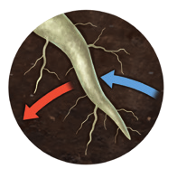

La función de nutrición en las plantas, como en el resto de los seres vivos, incluye todos los procesos que hacen posible la obtención y el uso de la energía y los nutrientes necesarios para vivir.
Las plantas son autótrofas, es decir, no toman alimentos de otros seres vivos, sino que fabrican la materia orgánica y la utilizan mediante los siguientes procesos:
A través de la raíz, la planta toma agua y sales minerales del suelo. Esta mezcla de agua y sales minerales constituye la savias bruta.
La savia bruta asciende por el tallo hasta las hojas mediante los vasos lechosos.
En las hojas tiene lugar la fotosíntesis, que transforma la savia bruta en savia elaborada. La savia elaborada está formada por las sustancias orgánicas que la planta precisa para llevar a cabo las funciones vitales. Para realizar la fotosíntesis, la planta toma dióxido de carbono del aire a través de los estomas y desprende oxígeno a la atmósfera. Necesita, además, la energía de la luz solar, que consigue gracias a la clorofila que contienen los cloroplastos.
Los vasos liberianos, por último, trasladan la savia elaborada desde las hojas a todas las partes de la planta.
Las plantas también respiran
La respiración es un proceso de obtención de energía para el cual la planta necesita oxígeno y las sustancias orgánicas que se han originado durante la fotosíntesis. En la respiración se liberan dióxido de carbono y agua.

Diagrama de crecimiento de la planta

Ilustración del crecimiento de raíces